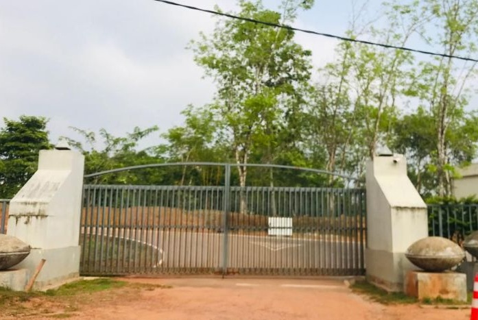

Faculty Navigator
Welcome to the Faculty Navigator
Welcome to the Faculty of Technology. Click the main entrance to proceed.

Enter Building
Go through the main doors to the lobby.Take Left to Computer Laboratory, Take Right to Faculty Canteen